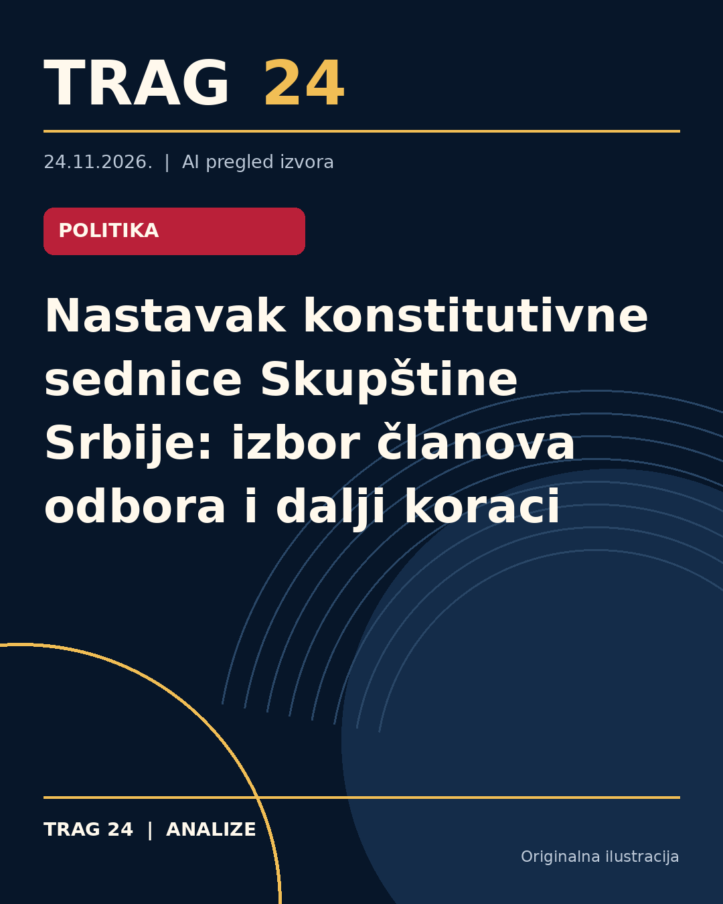

Nastavak konstitutivne sednice Skupštine Srbije: izbor članova odbora i dalji koraci

ŠTA SE DOGODILO
Konstitutivna sednica novog, 15. saziva Narodne skupštine Srbije biće nastavljena 24. novembra, a na dnevnom redu je izbor članova radnih tela Skupštine, odnosno skupštinskih odbora, kao i izbor stalnog sastava parlamentarnih delegacija u međunarodnim institucijama.
HRONOLOGIJA
Konstitutivna sednica započeta je 17. novembra verifikacijom mandata svih 250 poslanika čime je parlament konstituisan. Već 19. novembra održano je javno glasanje na kome je Aleksandar Čupić izabran za predsednika Narodne skupštine, a oko 14 časova 23. novembra održane su konsultacije predstavnika poslaničkih grupa o nastavku sednice i izboru članova radnih tela. Nastavak sednice je zakazan za 24. novembar sa početkom u 10 časova.
ŠTA NAVODE IZVORI
Aleksandar Vučić, šef poslaničke grupe SNS, nakon konsultacija sa predsednikom Skupštine Aleksandrom Čupićem, najavio je da naprednjaci najverovatnije neće učestvovati u radu skupštinskih odbora. Predsednik Skupštine Aleksandar Čupić istakao je da dijalog i tolerancija moraju postati obrazac političke kulture u parlamentu i da će funkciju obavljati strogo ali pravedno. Poslanički predstavnici nacionalnih manjina i Studentske liste izrazili su spremnost da prate proces konstituisanja odbora i da tokom nastavka sednice završe ovaj proces.
ŠTA JE POTVRĐENO
Potvrđeno je da je Aleksandar Čupić izabran za predsednika Narodne skupštine nakon javnog glasanja i da će konstitutivna sednica biti nastavljena 24. novembra sa dnevnim redom posvećenom izboru članova parlamentarnih odbora i delegacija. Takođe je potvrđeno da su održane konsultacije između poslaničkih grupa u Skupštini 23. novembra u vezi sa daljim koracima sednice.
ŠTA NIJE POTVRĐENO
Nije potvrđeno konačno učešće ili neparticipiranje poslaničke grupe SNS u radu odbora jer Vučić najavljuje samo najverovatniji scenario, ali isto nije formalno odlučeno. Takođe nije precizirano kako će biti konstituisane ostale parlamentarne grupe, niti je poznato tačno vreme završetka sednice i kompletiranje svih odbora.
ŠTA OSTАJE OTVORENO: Ostaje nejasno definitive da li će SNS u potpunosti bojkotovati rad odbora ili će se situacija promeniti tokom sednice. Takođe nije određeno kako će dalje teći formiranje vlade unutar roka od 90 dana od konstituisanja Skupštine, kao ni postavljanje datuma za završetak konstituisanja svih radnih tela.
Izvori
- https://www.b92.net/info/politika/287533/danas-nastavak-konstitutivne-sednice-skupstine-srbije-odrzane-konsultacije-istice-rok-za-izjasnjavanje/vest
- https://tvjasenica.rs/u-utorak-nastavak-konstitutivne-sednice-skupstine-srbije/
Ova analiza je pripremljena uz pomoć veštačke inteligencije na osnovu javno dostupnih izvora. Navodi izvora nisu nužno nezavisno potvrđeni.